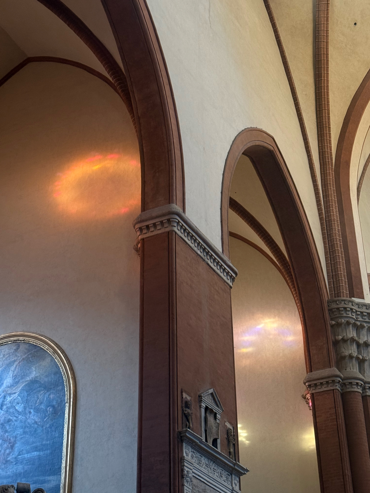
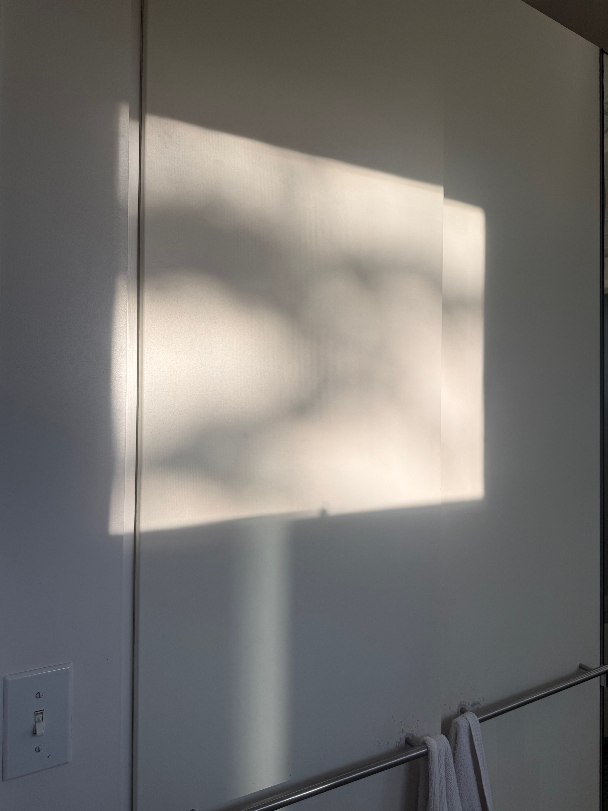
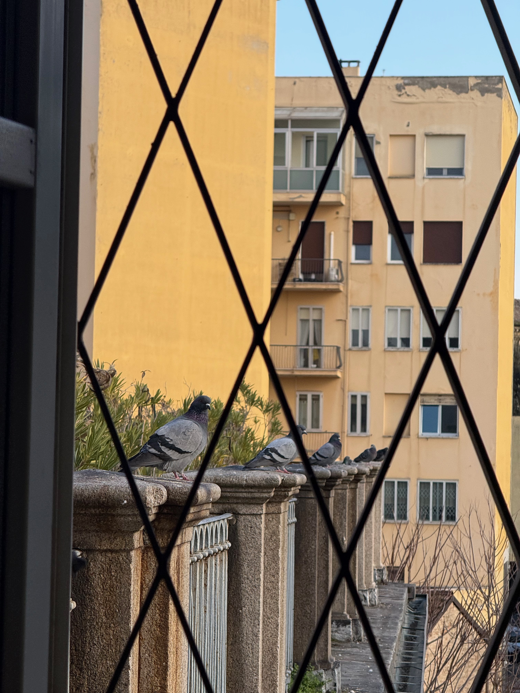
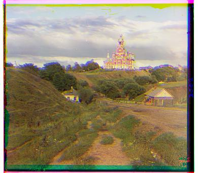
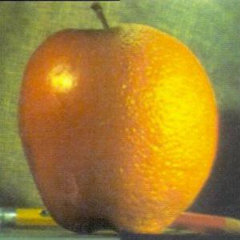
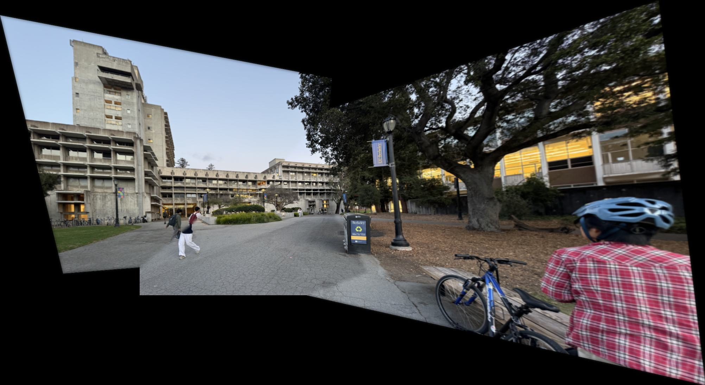
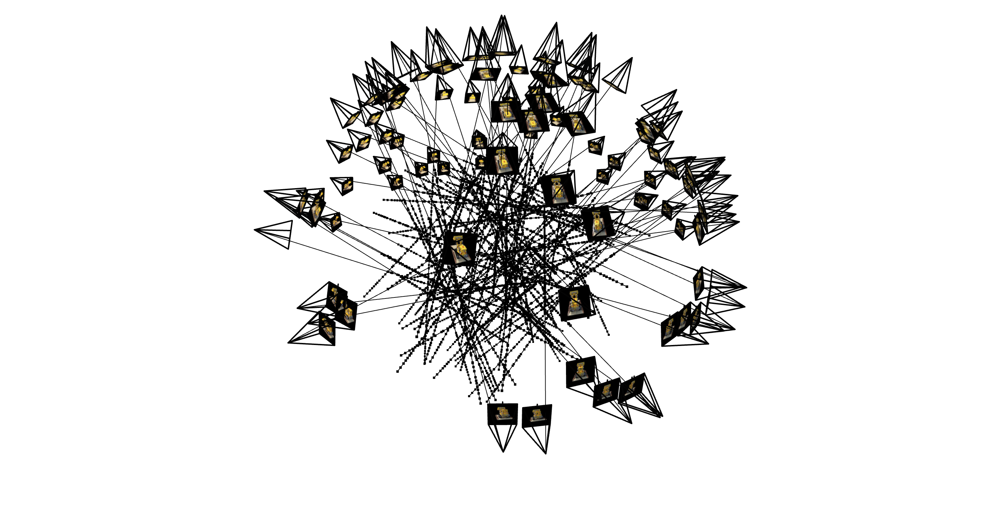
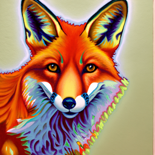

Hi! I'm Magnus
Thanks for finding my page! Here's a list of things I love:
books I love
Movies I love
Things I Love Pt 1
More Things I Love Pt 2
Shadows



Pidgeons




Projects from CS 180: Introduction to Computer Vision and Computational Photography

Colorizing the Prokudin-Gorskii Collection
Aligning three separate color channel images to produce colored photographs from glass plate negatives.

Convolutions, Filters, and Blending
Exploring image filters, hybrid images, Gaussian/Laplacian stacks, and multiresolution blending.

Panoramic Photos
Creating panoramic mosaics using homographies and automatic image alignment techniques.

NeRF
Reconstructing 3D scenes from 2D images using Neural Radiance Fields (NeRF).

Diffusion Models
Implementing and working with diffusion models for image generation.
Projects from CS 185: Deep Reinforcement Learning
Imitation Learning with MSE Loss and Flow Matching
Training imitation learning models using MSE Loss and Flow Matching to control a robot to move a block to a target location.
Policy Gradient Methods
Exploring policy gradient methods, comparing value estimators, baselines, GAE, and hyperparameter tuning across multiple environments.

DQN and Soft Actor-Critic
Implementing DQN with clipped double Q-learning and Soft Actor-Critic with fixed and auto-tuned temperature across multiple environments.